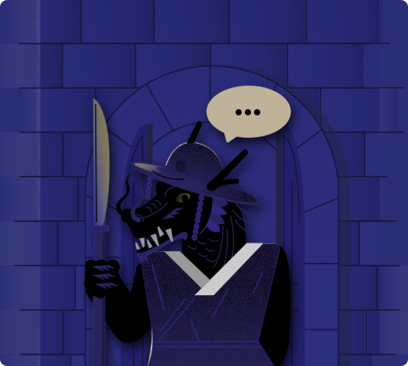

뒤로가기
#3 문지기와의 대화

잘도 날 찾아왔구나. 나는 천년을 넘도록
이곳을 지키고 있는 문지기다.
너희는 시간 여행을 할 준비가 되었는가?
이 문을 통과하는 순간, 또 다른 세상과
마주하게 될 것이다.
이곳 너머에서 아주 좋지 않은 일들이
일어나고 있으니, 조심하고
자, 준비가 되었다면
이 아이템을 받고 지나가도록해라.
절대로 아무나 믿어서는 안된다는 것을
명심하도록. 으하하하하하.
다음 시간을 참고하시게나.